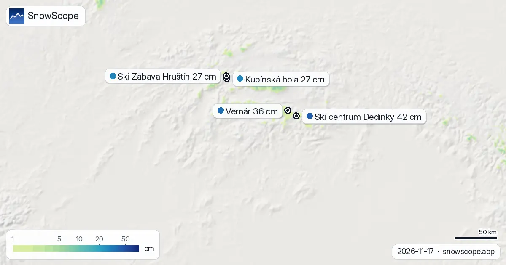

Wie viel Schnee liegt in der Slowakei? Der Stand am 17. November 2026
1.830 km² schneebedeckter Boden in der Slowakei an diesem Dienstag, ein Minus von 190 km² gegenüber gestern. Anders gesagt: 10 % des kartierten Berglands sind weiß.
Die Live-Schneeprognose für Ski centrum Dedinky in der SnowScope-AppSchneehöhen, Pulverschnee-Alarme und 3D-Karte, gratis.
Wie viel des Landes weiß ist
Unterhalb von etwa 1.200 m sind die Hänge meist grün oder braun. Die 1.710 km² der Vorwoche sind um 120 km² gewachsen.
| Skigebiet | Schneehöhe | Neuschnee, 72 h | Erwartet, nächste Tage | Gipfel |
|---|---|---|---|---|
| Ski centrum Dedinky | 42 cm | 1 cm | 0 cm | 871 m |
| Vernár | 36 cm | 1 cm | 0 cm | 1.001 m |
| Kubínská hola | 27 cm | 3 cm | 3 cm | 1.390 m |
| Ski Zábava Hruštín | 27 cm | 3 cm | 2 cm | 1.141 m |
| Vrátna | 23 cm | 7 cm | 9 cm | 1.529 m |

Von den Tälern bis zu den Gipfeln
Mittlere Schneehöhe je Höhenband: zwischen 500 und 1.000 m im Schnitt unter 1 cm, 3 % bedeckt; zwischen 1.000 und 1.500 m im Schnitt 1 cm, 39 % bedeckt; zwischen 1.500 und 2.000 m im Schnitt 9 cm, 99 % bedeckt; zwischen 2.000 und 2.500 m im Schnitt 17 cm, 100 % bedeckt.
Was das auf der Piste bedeutet
Der Schnee zieht sich nach oben zurück: auf die hohen Lifte setzen, tiefe Talabfahrten meiden.
Mit weiterem Schnee in Sicht dürften die nächsten Tage noch besser werden.
Neuschnee
Die Dreitagessummen erreichen bis zu 5 cm, rund um die Hohe Tatra, die Niedere Tatra und Malá Fatra.
Am letzten Tag kamen bis zu 4 cm hinzu.
Rund 280 km² bekamen mindestens 5 cm.
Wo man zuerst fahren sollte
An der Spitze steht Ski centrum Dedinky mit 42 cm.
Knapp dahinter: Vernár (36 cm), Kubínská hola (27 cm), Ski Zábava Hruštín (27 cm) und Vrátna (23 cm).
In Ski centrum Dedinky: 1 cm Neuschnee in drei Tagen, bis Freitag, 20. November werden 0 cm mehr erwartet.
Vernár bekam in drei Tagen 1 cm und könnte bis Freitag, 20. November weitere 0 cm dazubekommen.
Heute sind 34 von 107 Skigebieten in der Slowakei weiß.
Kommt Schnee?
Die kommende Woche könnte bis zu 12 cm bringen, davon 7 cm in den nächsten drei Tagen.
Der Montag, 23. November sticht heraus, mit bis zu 4 cm an einem Tag.
Tipps für Skifahrer
- Über der Waldgrenze kann der Schnee verfrachtet sein: Grate im Blick behalten.
- Neuschnee auf kalter Unterlage hält schlecht: an steilen Hängen vorsichtig sein.
- Für die Straßen zu hoch gelegenen Skigebieten können Winterreifen oder Ketten nötig sein.
Zu diesen Zahlen
Die Schneehöhen der Skigebiete sind der meiste Schnee in den oberen Hängen laut SnowScope-Schneemodell (etwa 1 km, Lauf vom 17. November); es sind Schätzungen für eine Fläche, keine Messung an einem Punkt. Werte von Messstationen sind Messungen am angegebenen Tag. Prognosen können sich ändern. Lies vor dem Freeriden immer den offiziellen Lawinenlagebericht.
Diesen Bericht zitieren
Für Forschung, Lehre oder Presse: Zahlen und Grafiken sind unter CC BY 4.0 mit dieser Quellenangabe frei nutzbar.
SnowScope (2026), Wie viel Schnee liegt in der Slowakei? Der Stand am 17. November 2026, https://snowscope.app/blog/de/2026/11/slovakia-snow-report-17-november-2026.html, abgerufen am 2026-11-17
SnowScope (Atlas Labs). (2026, November 17). Wie viel Schnee liegt in der Slowakei? Der Stand am 17. November 2026. SnowScope snow reports. https://snowscope.app/blog/de/2026/11/slovakia-snow-report-17-november-2026.html
BibTeX
@misc{snowscope2026slovakiasnowreport17nove,
author = {{SnowScope (Atlas Labs)}},
title = {Wie viel Schnee liegt in der Slowakei? Der Stand am 17. November 2026},
year = {2026},
month = nov,
howpublished = {\url{https://snowscope.app/blog/de/2026/11/slovakia-snow-report-17-november-2026.html}},
note = {Published 2026-11-17 12:53 UTC; accessed 2026-11-17}
}· CC BY 4.0 · Methoden, Daten und Werkzeuge →
Ski centrum Dedinky: Schnee und Temperatur nach Höhe, dieser Winter vs letzter (Werkzeuge) →
Ski centrum Dedinky folgen
Gratis: eine Nachricht, wenn Neuschnee kommt, und jeden Morgen die Vorhersage.
Weitere Schneeberichte

Dezember-Schneechancen aus 46 Wintern und geprüfte Tagespreise: Ski Cooper 49 $, Les 3 Vallées 75,70 €, Oukaïmeden ohne offiziellen Tarif. Wo ein günstiger Dezember-Skitag funktioniert.
Wir haben die SnowScope-Schneehöhenkarte mit 2.012 Messstationen verglichen: RMSE 7,7 cm, Abweichung -0,5 cm, Schnee oder kein Schnee in 88 % der Fälle richtig. Was funktioniert, was noch nicht und was als Nächstes kommt.

Das tägliche Ranking: der meiste prognostizierte Neuschnee für die nächsten 24 Stunden und bis zum 20. November, in Europa, Marokko und Nordamerika, …